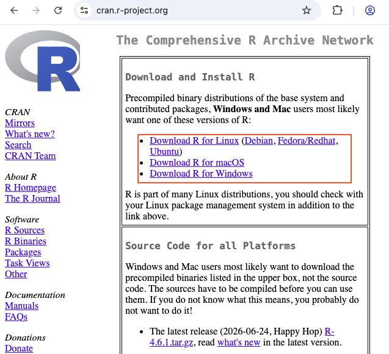

Self-paced · about 2–3 hours · complete before the second session. Work through this module at your own pace. If you get stuck, ask your AI assistant of choice (see Section A.8 for how to ask well) or post in the forum on Canvas. A short setup clinic at the start of the second session catches whatever is left.
In this course, we analyze data with the statistical software R. This module gets you from zero to a working setup — and to the point where you can run a script, load a data set, and turn your analysis into a reproducible report. It deliberately covers only the mechanics; everything conceptual (what to compute, and why) is the job of the chapters.
TipWhat you will have at the end of this module
The checkpoint in Section A.9 lets you verify all four points in ten minutes.
A.1 Why R?
R is free, runs on every operating system, and is one of the standard tools of data analysis in research and industry. Its real advantage for this course, however, is reproducibility: an analysis written as code can be re-run, checked, corrected, and shared — by you next month, by a colleague, or by your instructors. A sequence of mouse clicks in a spreadsheet cannot.
There is a second, more recent reason. AI assistants now write R code quickly and cheaply. This does not make R skills obsolete — it shifts them: the scarce skill is no longer typing code, but reading and checking it. You need to recognize what a piece of code does, whether it does what you intended, and where it silently goes wrong. That is exactly what this module and the following chapters train.
A.2 Setting up: two routes
You can work with R in two ways. Route A (local installation) is recommended: it works offline, has no usage limits, and is what you will use after the course. Route B (Posit Cloud) runs in the browser and requires no installation — a good fallback if the installation fails or your computer is managed by an employer.
A.2.1 Route A: install R and RStudio
You need two programs, installed in this order:
R — the language itself. Download it from CRAN, the official R archive: https://cran.r-project.org. Choose your operating system and install the latest release with the default settings.
RStudio Desktop — the program you actually work in. It is built on top of R: you can use R without RStudio, but not RStudio without R. Download it from https://posit.co/download/rstudio-desktop/ and install it with the default settings.

The CRAN download page.
WarningKnown pitfalls — check these before you ask for help
Folders synced with OneDrive, iCloud, or Dropbox can cause strange errors when R installs packages or writes files. Keep your course folder in a normal local folder (e.g., Documents/marketing-analytics).
Special characters in paths (umlauts, spaces, non-Latin characters in your user name) occasionally break package installation on Windows. If you see errors mentioning a path with such characters, create the course folder directly under C:/ (e.g., C:/marketing-analytics).
macOS: some packages need Apple’s command line developer tools. If an installation error mentions xcrun or a missing compiler, open the Terminal app and run xcode-select --install.
Old versions: if you installed R years ago, update it. Many current packages require a recent R version.
A.2.2 Route B: Posit Cloud
Posit Cloud (https://posit.cloud) offers RStudio in your web browser. Create a free account, click New Project → New RStudio Project, and you are ready to go — the interface is the same as in the desktop version, so everything below applies. Note that free accounts come with usage limits; check the current conditions on the Posit Cloud website.
A.3 RStudio in ten minutes
When you open RStudio, you see four panes:
Screenshot placeholder: RStudio with the four panes labeled (1) Script editor, (2) Console, (3) Environment, (4) Files / Plots / Packages / Help img/onboarding/rstudio_panes.png
The four panes of RStudio
Pane
What it is for
Script editor (top left)
Where you write your code and keep it. A script is a plain text file ending in .R.
Console (bottom left)
Where R executes code and prints results. You can type here directly, but nothing is saved.
Environment (top right)
Lists the objects (data sets, values) that currently exist in your session.
Files / Plots / Help (bottom right)
Browse files, view plots, read help pages.
Always write your code in a script, not in the console. To run a line of the script, put the cursor in it and press Ctrl + Enter (Windows) or Cmd + Enter (Mac). To run several lines, select them first. The result appears in the console.
A.4 Work in an RStudio Project
An RStudio Project is a folder that RStudio treats as the home of one piece of work. Its main benefit: when you open the project, R automatically looks for files in that folder. This saves you from the most common beginner problem of all — R not finding your files.
File → New Project → New Directory → New Project
Name it (e.g., marketing-analytics) and choose a normal local folder as its location (see the pitfalls above).
Inside the project, create subfolders data (for data files) and code (for scripts) — via the New Folder button in the Files pane.
From now on, start every work session by opening the project (double-click the .Rproj file, or File → Open Project).
ImportantOne setting to change right now
By default, RStudio offers to save your workspace (all objects in memory) when you quit, and restores it at the next start. This sounds convenient but causes hard-to-find errors: yesterday’s objects silently leak into today’s analysis. Your script is the record of your work — not the workspace.
Tools → Global Options → General: set “Save workspace to .RData on exit” to Never, and untick “Restore .RData into workspace at startup”.
Screenshot placeholder: Tools → Global Options → General, with the two workspace settings highlighted img/onboarding/global_options_workspace.png
You may still come across setwd("C:/Users/…") in older tutorials — a command that sets the folder R works in by hard-coding a path. With RStudio Projects, you do not need it; and scripts containing such paths break as soon as they run on another computer.
A.5 First steps in R
Create a new script (File → New File → R Script), save it as code/first-steps.R, and type along. Run each line and look at the result in the console.
A.5.1 Objects and assignment
Anything you create in R is an object. You create objects with the assignment operator <- (shortcut: Alt + -):
streams <-163608# assign a number to the object 'streams'streams # typing the name prints the value
[1] 163608
streams *2# objects can be used in calculations
[1] 327216
artist <-"Imagine Dragons"# text must be put in quotation marks
Everything after a # is a comment: R ignores it, but your future self will thank you for it. R is case-sensitive — streams and Streams are two different objects. Object names may contain letters, numbers, _ and ., and must start with a letter. In this course, we use lower-case words separated by underscores (top_tracks, mean_streams); whichever convention you choose, be consistent.
If the console shows a + instead of the usual >, R is waiting for you to finish a command — usually because of a missing closing bracket or quotation mark. Complete the command, or press Esc to abort.
A.5.2 Functions and arguments
Most of what you do in R, you do by calling functions. A function takes inputs (arguments) and returns a result:
seq(from =1, to =10, by =3) # arguments named explicitly
[1] 1 4 7 10
seq(1, 10, 3) # same result, arguments in default order
[1] 1 4 7 10
round(3.14159, digits =2)
[1] 3.14
If you name the arguments, their order does not matter; if you do not, you must follow the order the function expects. To find out which arguments a function takes, open its help page with ?seq (or press F1 with the cursor on the function name). When typing a function name, RStudio suggests completions — press Tab to see them.
A.5.3 Vectors and data types
A vector is a sequence of values of the same type, created with c() (“combine”):
top_streams <-c(163608, 126687, 120480, 110022, 108630)top_genres <-c("Dance", "Alternative", "Latino", "Dance", "Dance")top_explicit <-c(FALSE, FALSE, FALSE, TRUE, FALSE)mean(top_streams) # many functions work on whole vectors
[1] 125885.4
class(top_genres) # class() tells you the type of an object
[1] "character"
The most important data types are:
The most important data types in R
Type
Example
Typical use
numeric
163608, 3.14
Quantities: streams, prices, ratings on a numeric scale
character
"Dance"
Text: names, titles, free-text answers
factor
factor(c("Pop", "Rock"))
Categories with a fixed set of values: genres, conditions of an experiment
logical
TRUE, FALSE
Yes/no information; results of comparisons
Date
as.Date("2026-10-12")
Calendar dates
Types can be converted with as.numeric(), as.character(), as.factor(), as.Date(), etc. Why the type matters — and why a number is not always a quantity — is a topic of Chapter 2.
A.5.4 Data frames
A data frame is R’s version of a table: each column is a variable (a vector), each row an observation. All columns have the same length but may have different types. Almost all data you will analyze in this course comes as a data frame.
artist streams explicit
1 Axwell /\\ Ingrosso 163608 FALSE
2 Imagine Dragons 126687 FALSE
3 J. Balvin 120480 FALSE
top_tracks$streams # $ extracts one column as a vector
[1] 163608 126687 120480
str(top_tracks) # structure: number of rows, and type of each column
'data.frame': 3 obs. of 3 variables:
$ artist : chr "Axwell /\\ Ingrosso" "Imagine Dragons" "J. Balvin"
$ streams : num 163608 126687 120480
$ explicit: logi FALSE FALSE FALSE
Use View(top_tracks) (capital V) to open a data frame in a spreadsheet-like viewer.
A.5.5 Packages
R’s functionality comes in packages. A few are included with R; thousands more can be installed from CRAN. The distinction to remember:
install.packages("tidyverse") downloads and installs a package. You do this once per computer.
library(tidyverse) loads an installed package so you can use its functions. You do this in every session — put it at the top of every script.
# Run once (then comment out or delete the line):install.packages(c("tidyverse", "psych", "readxl", "haven", "rmarkdown"))
library(tidyverse) # loads dplyr, ggplot2, readr and more
The tidyverse is a collection of packages for data handling and visualization that we use throughout the course. If R reports could not find function "…", you have most likely forgotten to load the package that contains the function. You can also call a function without loading its package by writing package::function() — e.g., dplyr::filter().
A.6 Loading the course data
The main data set of the next chapter contains streaming chart data for about 67,000 tracks. Load it directly from the course repository:
music_url <-"https://raw.githubusercontent.com/WU-RDS/MA2025/main/data/music_data_fin.csv"music_data <-read_csv2(music_url)dim(music_data) # number of rows and columns
[1] 66796 31
Don’t worry about the details yet — why the function is read_csv2() and not read_csv() is one of the first lessons of Chapter 2. If the command fails, check your internet connection and that you have loaded the tidyverse.
A.7 Your first reproducible report
Your assignments are submitted as reproducible reports: documents that combine text, R code, and the code’s output, created with R Markdown. When you knit (render) an R Markdown file, R runs all code from top to bottom in a fresh session and assembles the result into an HTML file. A report that knits without errors is therefore proof that the analysis works — which is exactly why we ask for it.
File → New File → R Markdown… → give it a title, choose HTML as the output format → OK. (If RStudio asks to install packages, confirm.)
Save the file as code/first-report.Rmd.
Click the Knit button. After a few seconds, an HTML document opens.
Screenshot placeholder: an R Markdown file in RStudio (YAML header, text, code chunk) next to the knitted HTML output img/onboarding/rmarkdown_knit.png
An R Markdown file has three ingredients:
The header between the two --- lines at the top: title, author, output format.
Code chunks, which start with ```{r} and end with ```. Insert a new chunk with Ctrl + Alt + I (Mac: Cmd + Option + I) and run it with the green arrow.
Replace the template’s example content with your own. A minimal report looks like this:
---title: "First report"author: "Your name"output: html_document---## Loading the data::: {.cell}```{.r .cell-code}library(tidyverse)music_url <-"https://raw.githubusercontent.com/WU-RDS/MA2025/main/data/music_data_fin.csv"music_data <-read_csv2(music_url)```:::The data set contains `r nrow(music_data)` tracks.
The last line shows inline code: `r ` followed by an expression inserts its result directly into the text — so the number in your report is always the number in your data.
ImportantThe golden rule of reports
A report knits in a fresh R session. Everything the report needs — library() calls, loading the data, every intermediate step — must therefore be in the report. If your code works in the console but the report fails to knit, you are almost certainly relying on something that exists only in your current session.
A.8 Getting help — and working with AI assistants
Errors are part of working with R — for beginners and experts alike. They are not a sign that you are doing something wrong, but R’s way of telling you where to look.
A.8.1 Reading error messages
Read the message before you do anything else: it usually names the problem. The most common ones:
Common error messages and what they mean
Message
What it usually means
could not find function "…"
The package containing the function is not loaded — add library(…) — or the function name is misspelled.
object '…' not found
The object does not exist (yet): a typo, a wrong capitalization, or the line that creates it has not been run.
cannot open file '…': No such file or directory
R looks for the file in the wrong place, or the file name is misspelled. Are you working in your RStudio Project?
unexpected symbol / unexpected ')'
A syntax error: a missing comma, bracket, or quotation mark.
there is no package called '…'
The package is not installed yet — run install.packages("…") once.
$ operator is invalid for atomic vectors
You used $ on something that is not a data frame.
A.8.2 Asking an AI assistant — well
AI assistants are an endorsed study aid in this course (see the AI policy in the Introduction) and they are genuinely good at explaining error messages and suggesting code. How good the answer is depends on how good the question is:
Give context. Paste the code, the complete error message, and the output of str(your_data) — the assistant cannot see your data.
Ask for an explanation, not just a fix. “Why does this error occur, and what does the corrected line do differently?” teaches you something; “fix this” does not.
Verify. Run the suggested code and check that the result makes sense. AI assistants produce plausible-looking code that is sometimes subtly wrong — e.g., using a function from a package you have not loaded, or silently dropping missing values.
Build understanding step by step. Start with small requests and add complexity gradually. If you could not explain the resulting code to someone else, you are not done yet.
A.8.3 Other sources of help
Help pages:?function_name explains a function’s arguments and shows examples at the bottom of the page.
The forum on Canvas: choose the relevant chapter, check whether your question has been asked before, and include your code and the error message (as text or screenshot). If you have the question, so do five others.
Cheat sheets: one-page summaries of the most important packages, available via Help → Cheat Sheets in RStudio.
R for Data Science (https://r4ds.hadley.nz) — the free standard introduction to the tidyverse.
A.9 Checkpoint
You are ready for the second session if you can do the following in about ten minutes:
Open your RStudio Project (or Posit Cloud project).
Create a new R Markdown file, delete the template content below the header, and insert one code chunk that loads the tidyverse and the course data (see Section A.6).
Below the chunk, write one sentence that reports the number of tracks using inline code.
Add a second chunk with str(music_data).
Knit the file to HTML.
If the HTML opens and shows the structure of the data, your setup works. If not, work through Section A.8 — and bring the problem to the setup clinic at the start of the second session.